How to use this lesson
§0 · From last time. Lesson 2.1 modelled agent decisions as an MDP and derived Daniel's budget rule. That model assumed the agent could see the true state of the world. For an LLM agent, this is never true — the agent sees tool outputs, not the underlying truth. POMDPs (Partially Observable MDPs) are the formalism for this case, and they're the formal model that ReAct, Plan-and-Solve, and Reflexion are all approximating.
Business Scenario
Helix Research, Monday morning standup.
Tom Rivera is showing Maya his literature-triage agent's traces. One trace stands out:
Read paper 1 — relevance score 0.4. Read paper 2 — relevance 0.7. Read paper 3 — relevance 0.3. Read paper 4 — relevance 0.8. Read paper 5 — relevance 0.6.
Final answer: "5 out of 5 papers reviewed; 2 highly relevant (paper 2, paper 4)."
"This was a query about a specific gene target," Tom says. "After paper 2, the agent knew the target was probably relevant. Why did it keep reading? Each paper costs us 800ms and $0.04. We did this 14,000 times this week. That's £1,800 we might not need to spend."
The agent kept reading because it didn't update its belief about what it was looking for after each observation. It treated each paper independently. The POMDP framework explains exactly when to stop.
Bridge to Topic
In an MDP you know the state. In a POMDP you have to infer the state from observations. The agent's "knowledge state" is a probability distribution over true states — called a belief. Acting optimally in a POMDP means acting on your current belief, and updating that belief with every observation. Knowing this math is what turns "the agent kept reading" from a vibe into a quantifiable design defect.
Mind Map

Mermaid source
mindmap
root((POMDP))
Extra ingredients
Observation O
Observation model Omega
Belief
Distribution over S
Updated via Bayes
Belief MDP
Continuous state space
Same Bellman logic
Solution methods
Point-based VI
QMDP heuristic
LLM as approximator
Takeaway: a POMDP is an MDP whose state is a probability distribution. That's it. Everything else follows.
Elaboration
4.1 Definition
A POMDP is a tuple $\langle S, A, T, R, \Omega, O, \gamma \rangle$:
- $S, A, T, R, \gamma$ — same as MDP
- $\Omega$ — set of possible observations
- $O(o \mid s', a)$ — probability of seeing observation $o$ after taking action $a$ and arriving at state $s'$
The agent never sees $s$ directly. It sees a sequence of observations and must infer $s$.
4.2 The belief state
The agent's belief at time $t$ is $b_t \in \Delta(S)$ — a probability distribution over states. After taking action $a$ and observing $o$, the belief updates by Bayes' rule:
$$ b'(s') = \eta \cdot O(o \mid s', a) \sum_s T(s' \mid s, a) b(s) $$
where $\eta$ is a normalising constant.
This is the central equation of POMDP theory. Every observation is a chance to update the belief. An agent that doesn't update is leaving information on the table.
4.3 Acting on the belief
Once you have $b$, the optimal action is the one that maximises:
$$ Q^(b, a) = \sum_s b(s) R(s, a) + \gamma \sum_o P(o \mid b, a) V^(b'_{b, a, o}) $$
where $b'_{b, a, o}$ is the post-update belief. This is the Bellman equation in belief space — and belief space is continuous, even when state space is discrete. POMDPs are computationally hard in general (PSPACE-hard).
But you don't need optimality; you need good enough. LLM agents approximate this with implicit belief and learned heuristics. The math gives you the framework for analysing whether they're approximating well.
4.4 The "stop or continue" question
The most useful POMDP idea for LLM-agent design is the expected value of information (EVoI):
$$ \text{EVoI}(a) = \mathbb{E}o [V(b'{b, a, o})] - V(b) - c(a) $$
In English: how much does your value improve by taking the action (gathering this observation), minus the cost of taking it?
Stop when $\text{EVoI}(a) \leq 0$ for every $a$. That is: when no action's expected information gain pays for its cost.
This is the principled answer to Tom's question. After paper 2, the agent's belief about "is this target relevant?" was already strong. Reading paper 3 had near-zero EVoI because the marginal observation was unlikely to change the belief enough to change the answer.
Problem Statement
Tom's literature triage agent is asked: "Find all papers relevant to BRCA2 in clinical trials from 2024." Five candidate papers. After reading each, the agent emits a relevance score.
- Compute the belief update after each paper, assuming a Bayesian observer.
- Identify the step at which EVoI ≤ 0 and the agent should stop.
- Propose a termination rule the LLM agent can follow (since it can't compute EVoI explicitly).
Use the trace: 0.4, 0.7, 0.3, 0.8, 0.6. Assume the true latent variable is "average relevance across the population of candidate papers" and the prior is uniform on [0, 1].
Solution Walkthrough
Belief update (Beta-Bernoulli model)
Treat each paper's relevance score as a Bernoulli-like observation (>0.5 = relevant). The posterior over "fraction of papers relevant" is Beta-distributed.
Prior: Beta(1, 1) (uniform). After observations:
| Step | Papers seen | Relevant | Not rel | Posterior mean | Posterior 95% CI |
|---|---|---|---|---|---|
| 0 | 0 | 0 | 0 | 0.50 | [0.025, 0.975] |
| 1 | 1 (0.4) | 0 | 1 | 0.33 | [0.06, 0.81] |
| 2 | 2 (0.7) | 1 | 1 | 0.50 | [0.16, 0.84] |
| 3 | 3 (0.3) | 1 | 2 | 0.40 | [0.14, 0.74] |
| 4 | 4 (0.8) | 2 | 2 | 0.50 | [0.21, 0.78] |
| 5 | 5 (0.6) | 3 | 2 | 0.57 | [0.25, 0.84] |
After 3 papers the belief has stabilised meaningfully (mean 0.40, narrow CI). After 4 papers it's tighter still. After 5, the marginal change is small.
EVoI computation
Cost per paper: $0.04 + 0.8s × labour. Value of the decision: depends on what downstream uses the score for, but assume each correctly-classified paper saves $0.20 of researcher time (the time they'd have spent reading themselves).
EVoI of reading paper $k+1$, given $k$ papers seen:
$$ \text{EVoI}(k+1) \approx 0.20 \cdot \mathbb{P}(\text{misclassification flips}) - 0.04 $$
For $k=2$, the CI is wide; another paper has high information gain. EVoI > 0. For $k=3$, narrower CI; EVoI ≈ 0.20 × 0.15 − 0.04 = −0.01. Stop.
So the agent should have stopped after paper 3.
Termination rule for the LLM agent
Since the LLM can't compute Beta posteriors, give it a heuristic that approximates the EVoI condition:
"Stop reading after at least 3 papers if the relevance scores have stabilised (no flips between relevant and not-relevant in the last 2 papers) OR if you've read 5 papers regardless."
This catches Tom's scenario: after paper 3, the pattern was rel/not/not (mixed but not flipping), so the rule would have stopped. Saves ~£700 of the £1,800.
The general lesson: whenever an LLM agent does N tool calls in a row of decreasing marginal information, you have a missing termination heuristic. The POMDP framework tells you what the heuristic should look like.
Mathematical Foundation
7.1 The belief MDP
Any POMDP can be converted into an MDP whose state space is the belief space:
$$ \langle \Delta(S), A, T_b, R_b, \gamma \rangle $$
where $T_b(b' \mid b, a)$ comes from the belief update equation and $R_b(b, a) = \sum_s b(s) R(s, a)$. This is conceptually clean but computationally brutal — belief space is continuous (infinite states) even for finite $S$.
7.2 Approximation methods
You don't need exact POMDP solutions for production. Useful approximations:
- QMDP: assume the world becomes fully observable after one step. Solve the MDP, use $Q^*_{MDP}$ as a heuristic. Cheap and often good enough.
- Point-based value iteration (PBVI): maintain $V$ at a sample of belief points; interpolate.
- POMCP (POMDP Monte Carlo Planning): MCTS in belief space.
- LLM as policy: the model has implicit beliefs and implicit values. We use this in this course because it scales beyond any explicit POMDP solver.
7.3 The value of perfect information
A useful bound: the value of one more observation is at most the value of perfect information — what you'd gain if you could just observe the true state directly.
$$ \text{VoPI}(b) = \mathbb{E}{s \sim b}[\max_a R(s, a)] - \max_a \mathbb{E}{s \sim b}[R(s, a)] $$
If VoPI is small, no observation is worth taking; you should commit on the current belief. This is the formal version of "the agent has converged."
Technical Deep-Dive
8.1 The implicit belief in LLM agents
LLM agents maintain belief implicitly in their context window. The context contains:
- The original task
- All tool calls made
- All observations received
- Any intermediate reasoning
This is the agent's "belief state" — not a probability distribution, but a structured information set that the model can condition on. The Markov property holds (the model only sees what's in context).
You can extract a fuzzy belief by asking the model directly: "On a scale of 0–1, how confident are you that this is amount_diff?" These elicited beliefs are well-calibrated on common tasks and poorly calibrated on rare ones — exactly the calibration profile of any belief estimator.
8.2 The "context as belief" trade-off
Implicit beliefs in context have advantages:
- Trivially capture all history (no need to summarise into a sufficient statistic).
- Reasoning over the belief is just inference (the model does it natively).
- No state-design decisions needed.
And disadvantages:
- Context grows linearly with observations; cost grows quadratically (attention).
- Belief is opaque (no inspectable probability distribution).
- No formal stopping criterion (you can't compute EVoI directly).
The art is knowing when to summarise (compact the belief into a shorter sufficient statistic) versus carry (keep raw observations in context). Module 5 covers memory architectures that do this.
8.3 Production POMDP for Sherpa
In Module 4, Sherpa's termination policy uses an elicited-confidence + step-cap rule:
function shouldStop(belief: ElicitedBelief, step: number): boolean {
const maxConfidence = Math.max(...Object.values(belief));
return maxConfidence > 0.83 || step >= 8;
}
This is a heuristic approximation of "answer when VoPI < cost of next call." It's not optimal but it's defensible, cheap, and you can tune the 0.83 threshold per task class.
What This Unlocks
- Lesson 2.3 picks up the Bayesian thread — how to update beliefs when observations are noisy.
- Lesson 2.4 gives us the information-theoretic version of "stop when no more learning is possible."
- Module 4 uses the POMDP frame to design Sherpa's termination policy from first principles.
- Module 5 treats retrieval as a POMDP — the relevant document is the hidden state; each query is an action; each search result is an observation.
- Module 8 uses the POMDP framework to design eval metrics: regret (gap from optimal belief-state policy), calibration (does elicited confidence match actual accuracy?).